Voici une sélection de travaux personnels. Il s'agit principalement de modélisations, de texturings, et d'animations d'environnements 3D.
Ces projets ont été l'occasion de mettre à l'épreuve mes compétences en 3D afin de créer des environements quasiment photoréalistes et vivants.
Impressionnants visuellement, ils m'ont poussés à sortir de ma zone de confort et à en apprendre d'avantage sur l'immensité des fonctionnalités qu'offre le logiciel Blender.
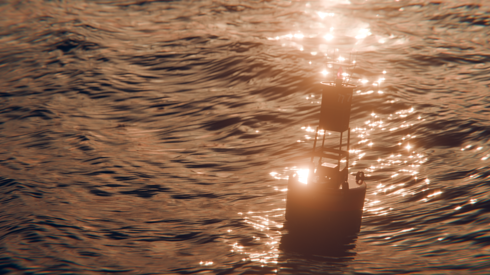
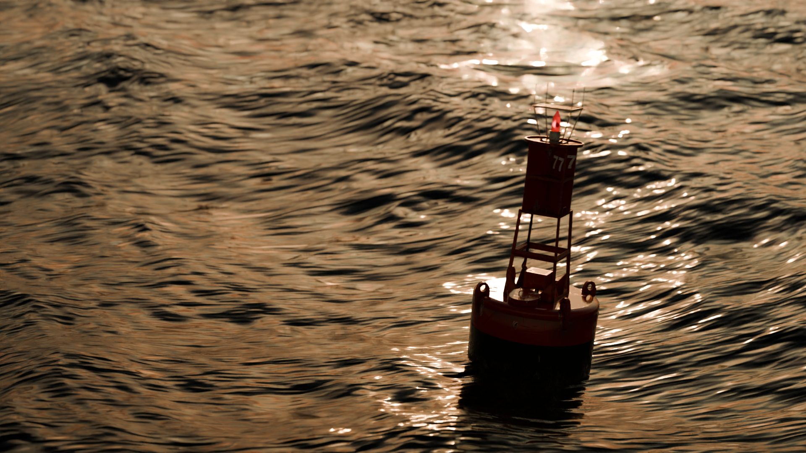
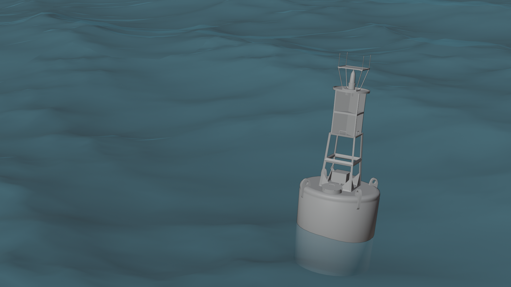
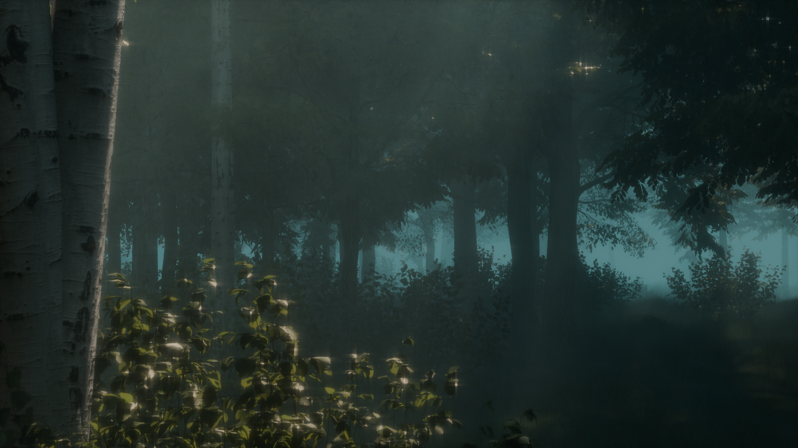
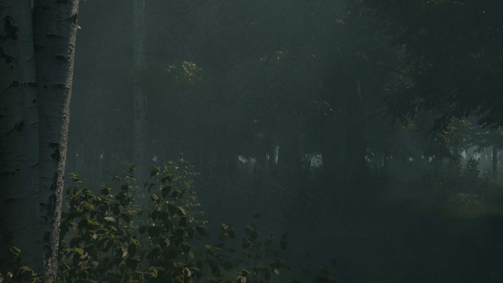
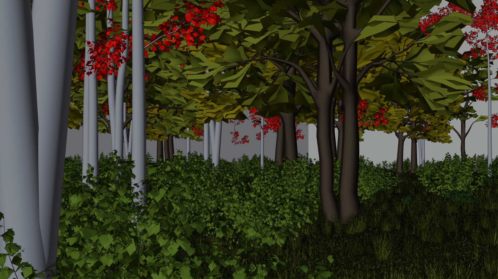
Toujours en cours de réalisation, ce projet scolaire est mon plus GROS projet, toutes catégories confondues.
Il s'agit de la réalisation complète d'un film d'animation d'environ 3-4 minutes, qui devrait être fini d'ici l'été 2026. Voici quelques scènes déjà produites.
Pour ce court-métrage, je dois modéliser tous les éléments qui y seront présents, ainsi que leur textures. Les personnages sont égalements riggés, articulés et animables.
Ce projet est un véritable challenge, qui pousse à l'extrême les compétences en 3D apprisent jusqu'ici.
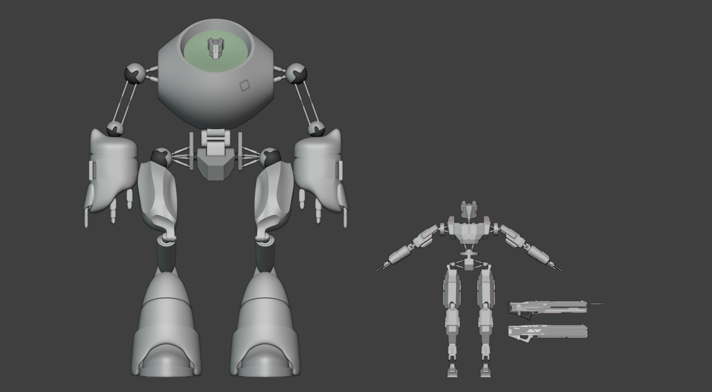
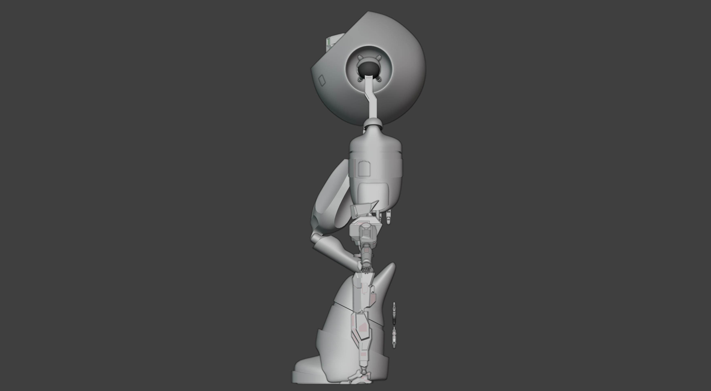
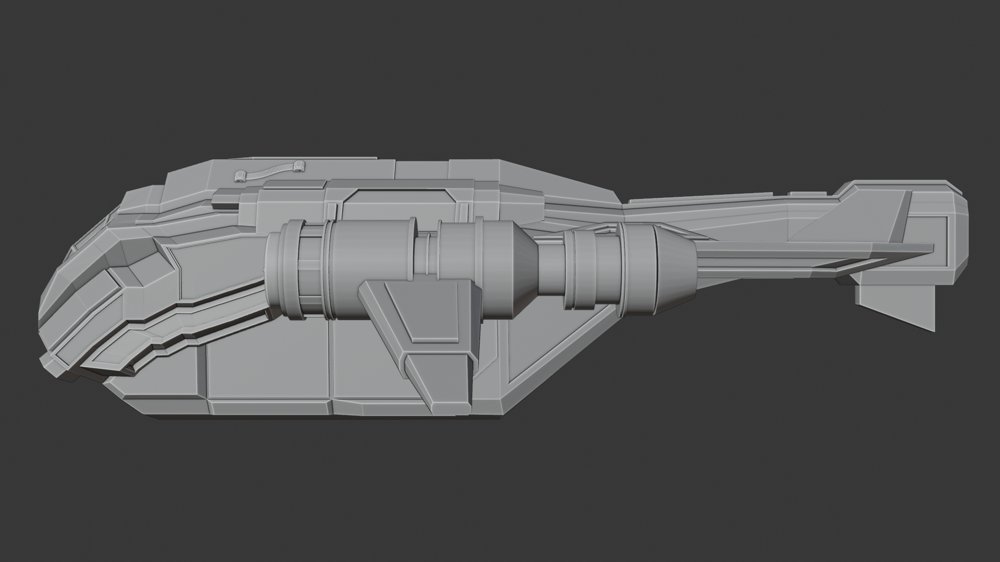
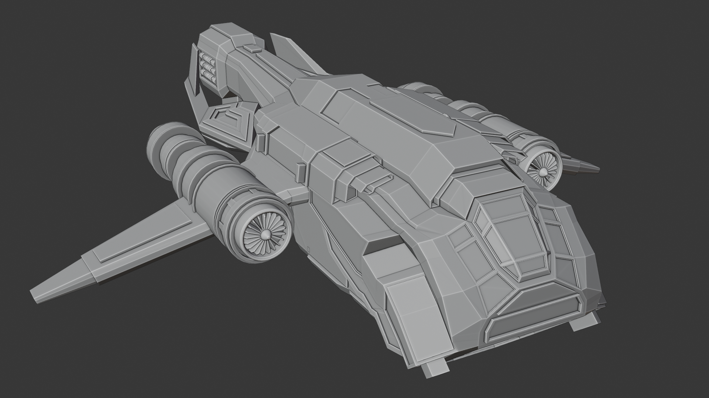
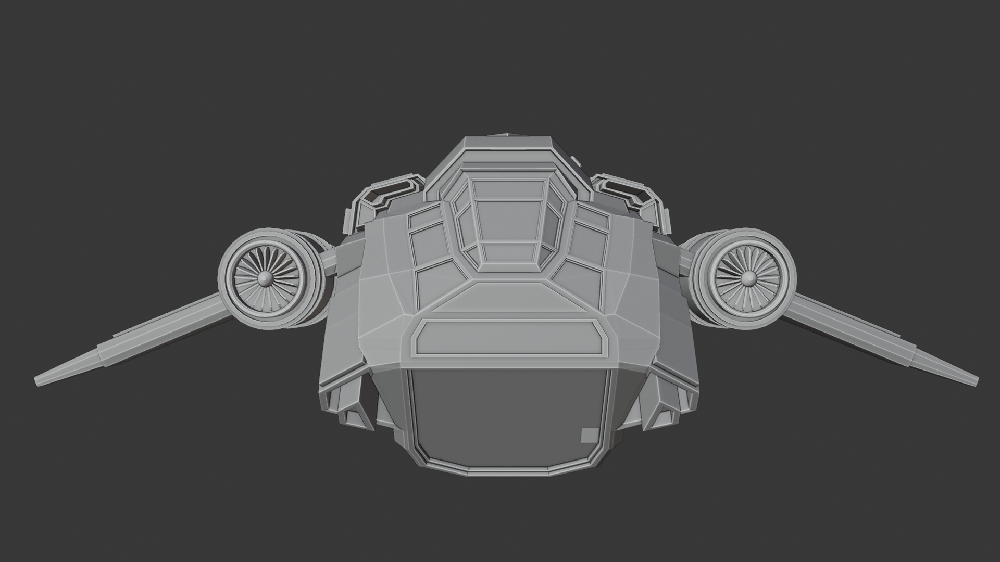
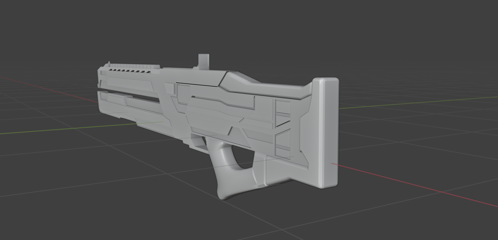
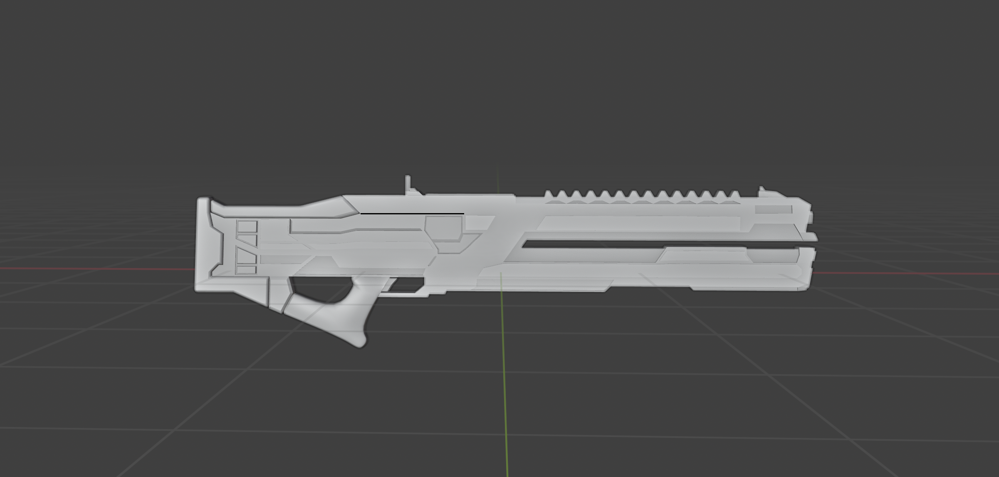
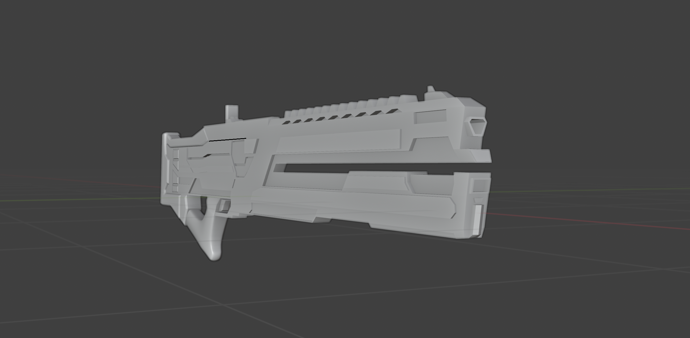